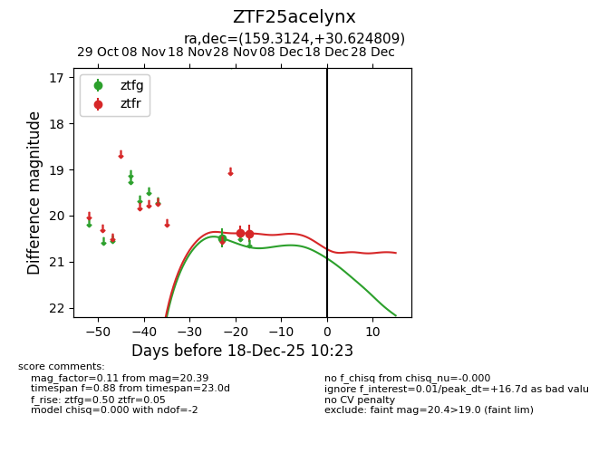
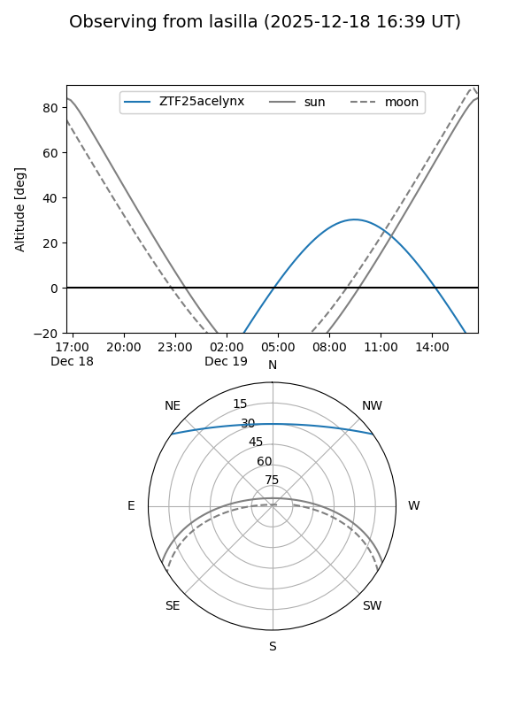
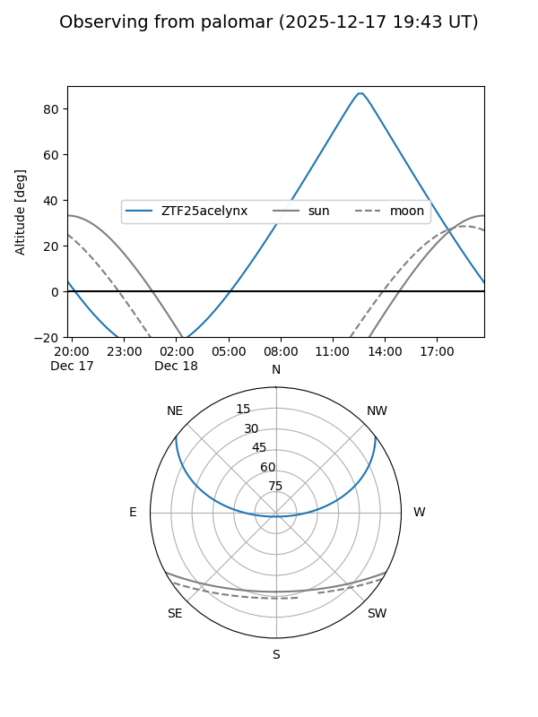

ZTF25acelynx
Target ZTF25acelynx at 2025-12-18 11:17
Aliases and brokers:
FINK: fink-portal.org/ZTF25acelynx
Lasair: lasair-ztf.lsst.ac.uk/objects/ZTF25acelynx
ALeRCE: alerce.online/object/ZTF25acelynx
alt names
ZTF25acelynx (ztf,fink_ztf)
Coordinates:
equatorial (ra, dec) = 159.3124,+30.62481
equatorial (HMS+DMS) = 10:37:14.98,+30:37:29.31
galactic (l, b) = (198.0528,+60.52517)
Photometry
last ztfg=20.49, ztfr=20.39
1 ztfg, 2 ztfr detections
Lightcurve

Visibility


Additional plots